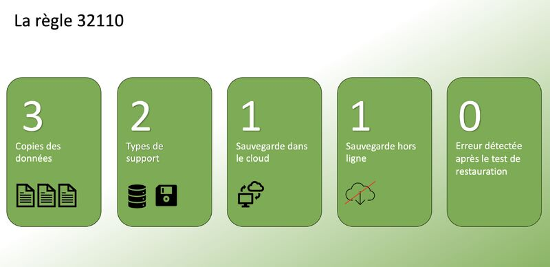
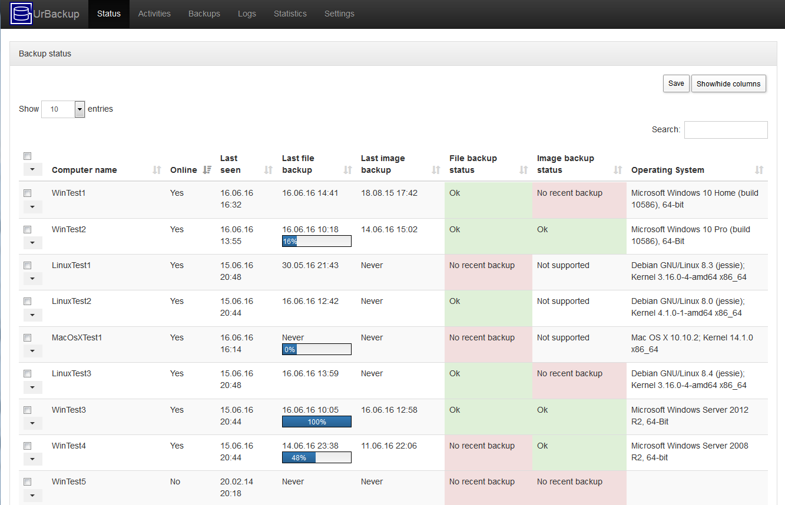

Veille Informatique Sauvegardes UrBackup et stratégie 3-2-1-1-0
Objectif
Dans le cadre du Bloc 1 – Support et mise à disposition de services informatiques, je me suis intéressé aux bonnes pratiques de sauvegarde des données. L’objectif était de comprendre la stratégie recommandée 3-2-1-1-0 et d’étudier la solution UrBackup pour mettre en place des sauvegardes sécurisées et fiables.
Présentation de la stratégie 3-2-1-1-0
La stratégie 3-2-1-1-0 est une méthode recommandée pour garantir la sécurité des données en entreprise. Elle consiste à conserver 3 copies des données, sur 2 supports différents, dont 1 copie hors site. Le second « 1 » correspond à une copie immuable ou hors ligne afin de se protéger contre les ransomwares. Le « 0 » signifie qu’il ne doit y avoir aucune erreur lors de la vérification des sauvegardes.
Cette approche permet de réduire fortement les risques de perte de données en cas de panne matérielle, d’erreur humaine ou de cyberattaque.
Image : Schéma de la stratégie 3-2-1-1-0
Figure 1 – Principe de sécurisation des sauvegardes selon la règle 3-2-1-1-0.
Découverte de la solution UrBackup
UrBackup est une solution de sauvegarde client/serveur open source qui permet de sauvegarder automatiquement des postes de travail et des serveurs. Elle propose des sauvegardes complètes et incrémentielles, aussi bien pour les fichiers que pour les images système.
L’interface web permet d’administrer les clients, de planifier les sauvegardes et de vérifier leur état. UrBackup facilite ainsi la centralisation et le suivi des sauvegardes dans un réseau.
Image : Interface d’administration UrBackup
Figure 2 – Tableau de bord du serveur UrBackup.
Mise en pratique et intérêt pour le Bloc 1
Dans un environnement de test, la mise en place d’UrBackup permet de comprendre l’importance de la planification des sauvegardes et du contrôle régulier des journaux. La vérification des sauvegardes est essentielle pour respecter le principe du « 0 erreur ».
Cette solution s’intègre parfaitement dans les missions du Bloc 1, notamment pour assurer la continuité de service et la protection du patrimoine informatique.
Bilan
Cette veille informatique m’a permis de mieux comprendre les enjeux liés à la protection des données et aux cybermenaces actuelles. La stratégie 3-2-1-1-0 constitue aujourd’hui une référence en matière de sauvegarde sécurisée.
Conclusion
La mise en place d’une solution comme UrBackup associée à la stratégie 3-2-1-1-0 permet d’assurer la continuité d’activité et de limiter les risques de perte de données. Cette réflexion renforce l’importance du rôle du technicien informatique dans la prévention et la sécurisation des systèmes d’information.